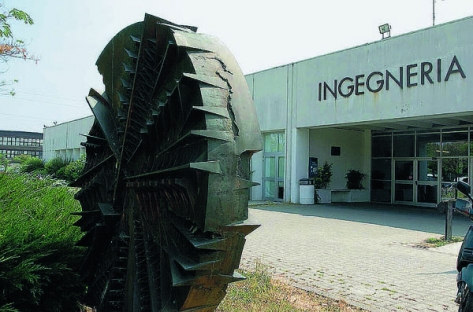

Organizzazione dello stage estivo
Lo stage “Creare un videogioco in Python o Go” organizzato dal Dipartimento di Ingegneria e Architettura avrà luogo da lunedì 11 giugno 2018 a venerdì 15 giugno 2018 dalle ore 09:00 alle 13:00 presso i laboratori della sede didattica di Ingegneria, al Campus dell'Area delle Scienze di Parma. Negli stessi giorni sarà inoltre possibile partecipare ad esercitazioni pomeridiane assistite, dalle ore 14:00 alle 18:00. Agli studenti senza precedente esperienza di programmazione, è suggerita caldamente la partecipazione alle attività pomeridiane, che saranno dedicate alla soluzione guidata di alcuni degli esercizi proposti.
L'indirizzo postale della sede è: Viale delle Scienze, 69/A - Campus Universitario - 43124 Parma. E' qui riportata anche un'immagine dell'ingresso della Sede Didattica di Ingegneria, a circa 20 metri dalla fermata dell'autobus. Il collegamento che segue porta ad una immagine Google Maps dell'area centrale del Campus, con al centro la sede didattica di Ingegneria: Mappa
Il Campus viene raggiunto dagli autobus delle linee 7, 14, 21, che transitano sia dalla stazione FFSS sia dal centro della città (località Ghiaia). Queste linee hanno fine corsa al Campus, nel piazzale antistante l'ingresso della sede didattica di Ingegneria (distanza circa 20 metri). Gli studenti che partecipano allo stage, se viaggiano con i mezzi pubblici, possono salire su uno degli autobus delle linee 7, 14, 21 in stazione (lato Via Borsellino, passa sotto la stazione FFSS) e scendore al capolinea. La durata del viaggio in bus dalla stazione al capolinea al campus può arrivare a 20'-25' se c'è molto traffico. (Se qualcuno dovesserentrare in ritardo di qualche minuto alle attività di stage non è un problema: verrà comunque accolti). Si raccomanda di acquistare preliminarmente la dotazione necessaria di biglietti del bus (anche per il ritorno, ad esempio in stazione), perchè i controlli a bordo sono sistematici e al Campus manca un punto di rivendita biglietti aperto. I mezzi pubblici nella direzione corretta sono in genere etichettati come direzione “Campus” oppure “Università Sud”.
Se gli studenti dovessero viaggiare con un mezzo proprio o accompagnati da terzi in auto, il Campus si trova nella zona Sud di Parma, appena fuori dalla tangenziale. Occorre prendere l'uscita della tangenziale di Via Langhirano: si entra in una grande rotonda situata sotto la tangenziale da cui si svolta in un'uscita in direzione sud, tra un centro commerciale Conad e un grande cinema multisala. Dopo circa 200 m c'è l'ingresso al Campus vero e proprio. Si segue una delle due strade fino al centro del campus, dove si trovano il capolinea dell'autobus ed una edicola (purtroppo attualmente chiusa). L'edicola è a fianco dell'edificio più alto del campus, quindi non ci si può sbagliare. I parcheggi sono amplissimi, ed essendo terminate le lezioni non ci sarà problema a parcheggiare. A questo punto ci si porta all'ingresso della sede didattica di Ingegneria (immagine).

Davanti all'ingresso saranno appese le locandine dello stage e ci sarà un docente o uno dei tutori ad accogliere i ragazzi per accompagnarli a gruppi nei laboratori. In ogni caso, entrando nell'edificio della sede didattica di Ingegneria c'è una portineria a cui si possono chiedere indicazioni.
I laboratori sono dotati di PC fissi, tuttavia consigliamo agli studenti che dispongono di un PC portatile di portarlo con sé. In tal modo potranno lavorare direttamente su un'applicazione software che poi conserveranno e potranno continuare a migliorare e sviluppare anche successivamente.
Oltre alle attività principali di stage al mattino, sarà possibile consolidare l'apprendimento avvalendosi dei tutori al pomeriggio. Dalle 14.00 in poi una parte dei laboratori resterà disponibile per gli studenti che partecipano allo stage con la presenza dei tutori, in modo da consentire agli studenti di approfondire, se lo desiderano, quanto hanno visto al mattino.
A fianco della sede di Ingegneria, a circa 100 metri, è presente una mensa studenti. Un'altra mensa è disponibile a circa 300 metri. Il costo di un pasto in queste mense è di circa 5-7 Euro. A fianco di ciascuna mensa è presente un bar con panini e pasti rapidi.
Alla fine dello stage, a ciascuno studente che abbia partecipato efficacemente alle attività dello stage, sarà consegnato un attestato di partecipazione. L'attestato indicherà il numero di ore frequentate e la loro fruizione in forma di “Alternanza Scuola-Lavoro”, oppure come semplice stage. Altri eventuali moduli richiesti dalla scuola, potranno essere consegnati al docente direttamente in lab, per la firma.